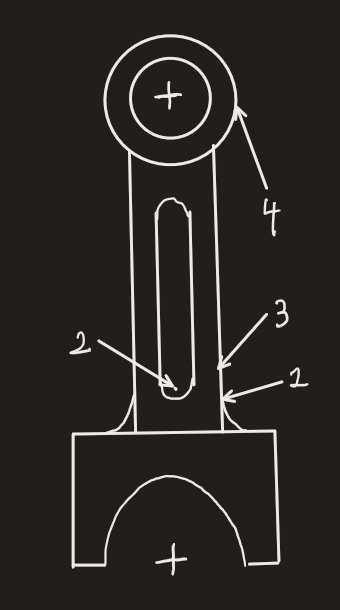
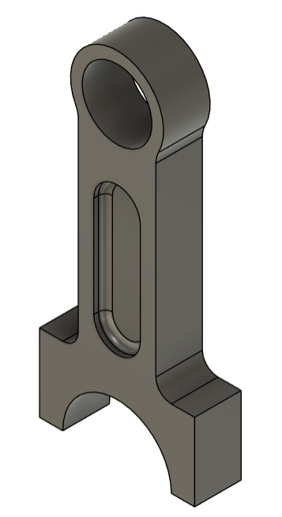

Overview
As part of my Internal Combustion Engines course, I designed a piston connecting rod, developing parametric stress models and performing fatigue analysis under cyclic loading to guide design decisions. I wrote Python scripts to compute stresses across the full loading cycle at high resolution, enabling rapid iteration of key design parameters. The finalized geometry was modeled in Fusion 360 and exported to ANSYS for finite element stress analysis, where simulation results were compared against analytical predictions to inform stress model refinements.
You can read the full project report here and view the Python code for this project on the GitHub repository
Design and Stress Analysis
As shown in the diagram, four different stress locations were selected for analysis:
- Where the fillet between the big end and the base end
- Where the end of the web is filleted
- At the surface before the web of the "I-beam" section rounds out
- The ring where the connecting rod connects to the wrist pin
For the purposes of stress analysis, point 1 could straightforwardly be treated as a bar with a shoulder fillet and point 4 as an infinite plate with a round hole; the latter assumption holds up surprisingly well despite not being entirely accurate. Point two was a little more complicated; it could be treated as another bar with a shoulder fillet, but that doesn't take into account the flanges. I eventually discovered the best simplification was indeed as a bar with a shoulder fillet and computing the stresses at the center of the rod, with the caveat that the stress had to be multiplied by the percentage of the web area out of the total cross-sectional area.
Point 3 was the most interesting as I attempted to model it as a combined plate with hole and a solid cross section, with a stress concentration. However, I found that not introducing a stress concentration gave more accurate results.

The four stress locations
Having derived the stress equations, I was able to leverage python to perform all the kinematic, pressure, and stress calculations at 200 crankshaft angles over the compression and power stroke of the piston. This enabled quick iteration over the design parameters including fillet radii, the width and thickness of the web, the width and length of the main connecting rod body and the size of both the big end and the ring of the small end.
Design parameters were selected based on what minimized the loading stresses at all four points and a fatigue analysis of the design was performed under cyclic loading conditions using the Soderberg criterion. These parameters were used to create a parametric model in Fusion 360 so that the geometry could be imported into ANSYS for structural finite element analysis.

Connecting rod model in Fusion 360
FEA Simulation
It was necessary to determine the validity of the derived stress equations at each point using Finite Element Analysis in ANSYS. Due to issues with ANSYS, analysis was done at the crank angle of 6.38 radians - just at the start of the power stroke - instead of over the entire loading cycle. Initial results did show while points 1 and 4 were strongly accurate, refinements needed to be made to the design assumptions at points 2 and 3, including removing the stress concentration factor at point 3 and changing the representation of point 2. The final ANSYS results for normal, shear, and principal stresses are shown here.